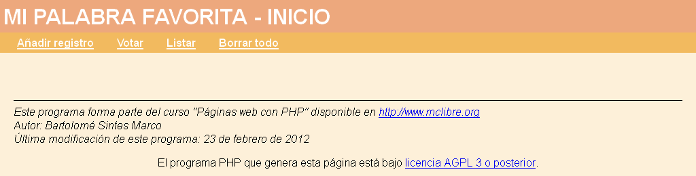
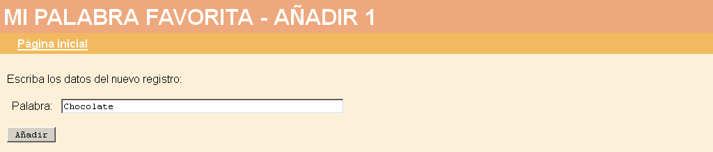
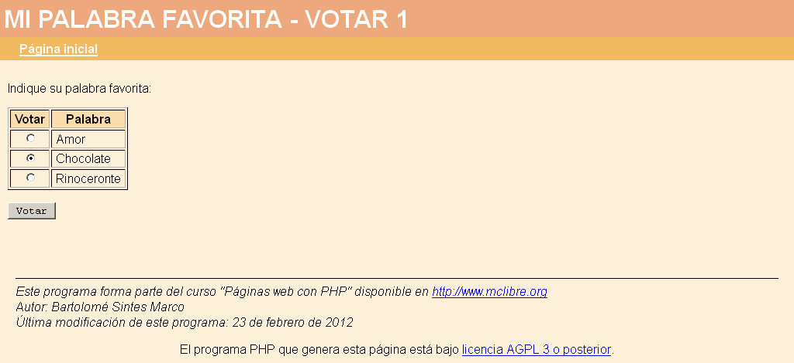
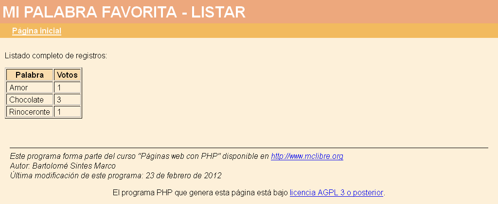

En este examen se debe crear un programa que gestione una base de datos de palabras y que permita votar la palabra favorita.
Estas pueden ser las consultas de creación de tablas para este examen:
// Tamaño de los campos
define('MAX_REG_TABLA', 20); // Número máximo de registros en la tabla
$tamPalabra = 50; // Tamaño del campo Palabra
$recorta = [
'palabra' => $tamPalabra
];
// Consulta de creación de tabla en MySQL
$consulta = "CREATE TABLE $dbTabla (
id INTEGER UNSIGNED NOT NULL AUTO_INCREMENT,
palabra VARCHAR($tamPalabra),
votos INTEGER UNSIGNED,
PRIMARY KEY(id)
)";
// Consultas de creación de tablas en SQLite
$consulta = "CREATE TABLE $dbTabla (
id INTEGER PRIMARY KEY,
palabra VARCHAR($tamPalabra),
votos INTEGER
)";



